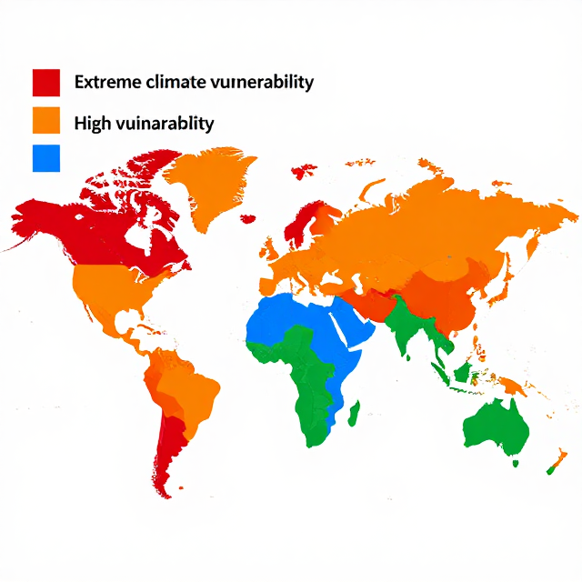

從警報到韌性
在氣候衝擊中,我們怎麼活下來、活得好
警報響起的那一秒,你可以選擇成為「主動有準備的節點」。
起點
同一場颱風,A 國死 3 人,B 國死 300 人——差在哪?
🏘️
準 備 充 分
A 國
有預警、有避難計畫、有韌性基礎設施
🌊
脆 弱 高
B 國
同樣的颱風,造成百倍以上傷亡
風險 = 危害 × 暴露 × 脆弱度(可改變的變數)
活動一
從新聞到資料
用三因子拆解氣候災害
活動一・步驟 1
暖身問答
1
同場颱風為什麼傷亡差距上百倍?2
是天災,還是人為決定的後果?3
哪些變數是「可以改變」的?脆弱度不是命運。
活動一・步驟 2
全球 33–36 億人住在高脆弱地區
全球脆弱熱區世界地圖
世界連線圖與教學標記

全球 33–36 億人住在高脆弱地區
活動一・步驟 3
臺灣三大災害案例:三因子拆解
| 案例 | 危害 | 暴露 | 脆弱度 |
|---|---|---|---|
| 2009 莫拉克風災 | 單日降雨破紀錄 | 南部山區聚落 | 邊坡破壞 / 通訊中斷 |
| 2018 0823 水災 | 滯留鋒豪雨 | 中南部低窪平原 | 排水系統不足 |
| 2022 0918 池上地震 | 規模 6.8 地震 | 東部花東縱谷 | 橋梁與老屋耐震 |
分組討論:選一個案例,把三因子各列三個觀察點。
參考資料:教育部《CCE_IV 災難》單元(校內 RAG 教材)
活動一・步驟 4
臺灣未來:豪雨翻倍,颱風「少但強」
豪雨事件頻率變化條圖 + 颱風強度趨勢
趨勢圖
臺灣未來:豪雨翻倍,颱風「少但強」
資料來源:
臺灣氣候變遷推估資訊與調適知識平台(TCCIP)
活動二
預警、應變、復原
緊急計畫怎麼設計?
活動二・步驟 2
臺灣預警系統:三級警報 + CBS
CBS 細胞廣播流程圖
流程圖
臺灣預警系統:三級警報 + CBS
資料來源:
中央氣象署 — 防災氣象
活動二・步驟 3
校園防災盤點:你的學校準備好了嗎?
校園避難路線圖範例
概念整理圖
校園防災盤點:你的學校準備好了嗎?
參考資料:教育部《KEE4_U1 災害防救大圖解》單元(校內 RAG 教材)
活動二・步驟 4
緊急應變計畫的 5W1H
| W / H | 核心問題 | 範例 |
|---|---|---|
| Who | 誰負責? | 通報員、引導員、點名員、聯絡員 |
| When | 何時啟動? | 警戒級以上 / 警報音響起 |
| Where | 到哪集合? | 操場 B 區 / 二樓大廳 |
| What | 帶什麼? | 名單、急救包、手電筒 |
| Why | 為什麼這樣設計? | 動線最短、無瓶頸、避高風險區 |
| How | 怎麼通報、怎麼演練? | 對講機 → 學務處 → 119;每學期 2 次演練 |
活動二・步驟 4・學習單(投影版)
教室緊急應變計畫:角色分工腳本
| 角色 | 豪雨情境 | 地震情境 | 高溫情境 |
|---|---|---|---|
| 通報員 | |||
| 引導員 | |||
| 點名員 | |||
| 聯絡員 |
完整互動版見 worksheet.html §3
活動三
減緩 vs 調適
從仙台框架到臺灣 404 億
活動三・步驟 1
減緩 vs 調適:治因 vs 治症
減 緩 / MITIGATION
🔋
治「因」
減少溫室氣體排放
例:風電、節能、植樹
調 適 / ADAPTATION
🛡️
治「症」
承受已發生的衝擊
例:海堤、耐旱作物、熱浪應變
兩者必須並行——只減緩,衝擊已在發生;只調適,未來會超出可承受範圍。
活動三・步驟 2
仙台減災框架:7 大目標、4 優先行動
仙台框架 7 目標雷達圖
概念整理圖
仙台減災框架:7 大目標、4 優先行動
活動三・步驟 2
預防 1 美元,省下救助 4–7 美元
1 美元 vs 4-7 美元 對比圖
比較圖
預防 1 美元,省下救助 4–7 美元
資料來源:
聯合國減災辦公室 / 世界銀行 Lifelines 報告
活動三・步驟 3
臺灣國家氣候變遷調適行動方案
7 領域圓盤+預算分配圖
世界連線圖與教學標記
臺灣國家氣候變遷調適行動方案
資料來源:
中華民國環境部 — 國家氣候變遷調適行動方案
活動三・步驟 3
維生基礎系統:水、電、通訊、交通
💧 水
- 斷水數日的應變
⚡ 電
- 停電下的家用備援
📡 通訊
- 斷訊時的會合點
🚗 交通
- 替代路線與步行路徑
72 小時整備的核心:假設這四個系統都倒下,你能不能活 72 小時?
參考資料:教育部《CCE_IV 維生基礎系統》單元(校內 RAG 教材)
活動三・步驟 4
倫理兩難:堤防 vs 太陽能,先補哪個?
調 適 派
🌊
先補堤防
已發生的衝擊不能等
守住現在的家園
減 緩 派
☀️
先補太陽能
不減源頭,堤防永遠補不完
守住未來的家園
正反方各 3 分鐘陳述 + 2 分鐘交互質詢——練習用數據做政策主張。
活動四
從校園到社區
韌性提案與後設反思
活動四・步驟 1
氣候健康風險:每年 25 萬額外死亡
健康衝擊類型分布圖
天氣指標圖
氣候健康風險:每年 25 萬額外死亡
資料來源:
世界衛生組織 — 氣候變遷與健康事實清單
活動四・步驟 2・學習單(投影版)
校園/社區韌性提案書
| 欄位 | 說明 | 你的提案 |
|---|---|---|
| 現況盤點 | 校園/社區的脆弱點 | |
| C 主張 | 具體訴求 | |
| E 證據 | 引用至少 2 個數據 | |
| R 推論 | 為何這個提案有效? | |
| 可行步驟 | 3 個月可啟動的行動 | |
| WSA 檢核 | 治理/課程/營運/社群 |
完整互動版見 worksheet.html §7
活動四・步驟 3
1 分鐘閃電提案 + 互評
| 評分面向 | 1 分 | 3 分 | 5 分 |
|---|---|---|---|
| 治理 | 無 | 有單位 | 有可監督機制 |
| 課程 | 無連結 | 單科 | 跨科整合 |
| 校園營運 | 無 | 單一硬體 | 整體調適計畫 |
| 社群連結 | 無 | 家長 | 里辦/消防/家長會 |
| 可行性 | 難 | 需大幅改造 | 3 個月可啟動 |
| 可量測 | 無 KPI | 有但模糊 | 數字 + 期程 |
選出 2 組,送校長信箱與班聯會。
活動四・步驟 4・學習單(投影版)
家庭緊急整備 24 小時挑戰
勾選 3 項本週要和家人完成的整備行動,並寫一句反思。
- 檢查家中緊急包(7 日水、糧、藥、手電筒、行動電源)
- 與家人約定斷訊時的會合點
- 列出社區避難所位置與步行路線
- 檢查長輩夏季熱傷害預防(電風扇、補水、降溫)
- 下載防災 App、開啟政府災防告警
我的心態反思(50 字以上):
完整互動版見 worksheet.html §8
總結
三個關鍵字,從被動受災到主動韌性
第 1 個
公式
風險 = 危害 × 暴露 × 脆弱度
後兩者可改變
後兩者可改變
第 2 個
兩腳
減緩(治因)+ 調適(治症)
缺一不可
缺一不可
第 3 個
節點
你不是末端的受災者
是家庭與社區的資訊節點
是家庭與社區的資訊節點
警報響的那一秒,你選擇成為什麼樣的人?
準備過的人,選擇權永遠多一點。